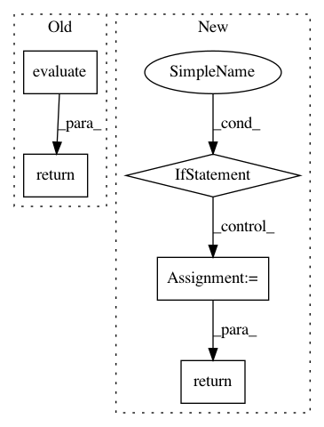

f0eea66ce83fc59910c623aa4e50ddfdd1f3ae7b,gpytorch/lazy/matmul_lazy_variable.py,MatmulLazyVariable,evaluate,#MatmulLazyVariable#,96
Before Change
return super(MatmulLazyVariable, self).diag()
def evaluate(self):
return torch.matmul(self.lhs.evaluate(), self.rhs.evaluate())
After Change
return super(MatmulLazyVariable, self).diag()
def evaluate(self):
if not hasattr(self, "_evaluated_memo"):
self._evaluated_memo = torch.matmul(
self._evaluated_lhs,
self._evaluated_rhs,
)
return self._evaluated_memo
In pattern: SUPERPATTERN
Frequency: 3
Non-data size: 5
Instances
Project Name: cornellius-gp/gpytorch
Commit Name: f0eea66ce83fc59910c623aa4e50ddfdd1f3ae7b
Time: 2018-08-06
Author: gpleiss@gmail.com
File Name: gpytorch/lazy/matmul_lazy_variable.py
Class Name: MatmulLazyVariable
Method Name: evaluate
Project Name: cornellius-gp/gpytorch
Commit Name: f0eea66ce83fc59910c623aa4e50ddfdd1f3ae7b
Time: 2018-08-06
Author: gpleiss@gmail.com
File Name: gpytorch/lazy/root_lazy_variable.py
Class Name: RootLazyVariable
Method Name: evaluate
Project Name: cornellius-gp/gpytorch
Commit Name: 24e8113e9a73fa3662fb616a231007deee1f35ac
Time: 2018-08-05
Author: jrg365@cornell.edu
File Name: gpytorch/kernels/multitask_kernel.py
Class Name: MultitaskKernel
Method Name: forward_diag